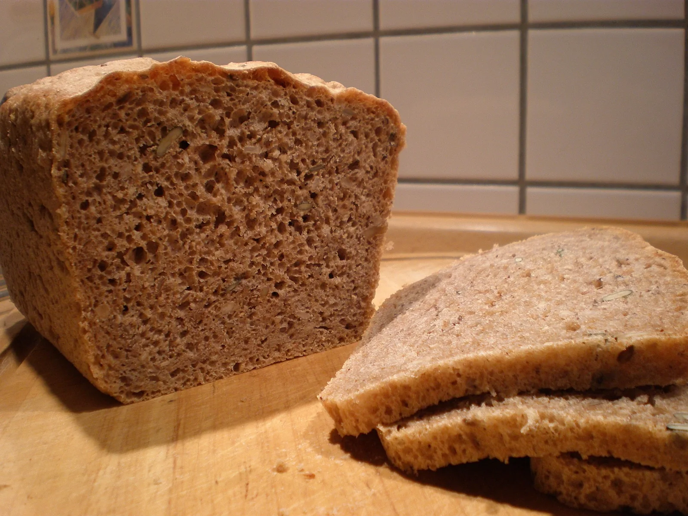

Gut geschützt
Das Dinkelkorn sitzt fest im Spelz. Vor dem Mahlen muss diese Hülle in einem zusätzlichen Arbeitsschritt entfernt werden.
Brotporträt 04 / 07
Eine alte Getreideart mit feiner, nussiger Note.
Die Geschichte entdecken
Herkunft & Geschichte
Dinkel ist eng mit dem gewöhnlichen Brotweizen verwandt und gehört zu den alten Kulturgetreiden. In Teilen Mitteleuropas, etwa im südwestdeutschen Raum und in der Schweiz, hat sein Anbau eine lange Tradition. Später wurde er vielerorts von ertragreicheren Weizensorten verdrängt.
Mit dem Interesse an unterschiedlichen Getreidearten ist auch Dinkelbrot wieder stärker in den Blick gerückt. Es ist kein einheitliches Rezept: Helles Dinkelmehl ergibt ein feineres, lockeres Brot, Vollkornmehl einen kräftigeren Laib. Das abgebildete Brot ist eine Variante mit Saaten und Walnüssen.
Zum Weiterlesen: Hintergrund: Dinkelbrot ↗Zuletzt aufgerufen am
Von außen nach innen
Milder Ziegenkäse, Birne oder ein Gemüseaufstrich greifen die feinen, nussigen Aromen auf.
Eine Scheibe Wissen
Das Dinkelkorn sitzt fest im Spelz. Vor dem Mahlen muss diese Hülle in einem zusätzlichen Arbeitsschritt entfernt werden.
Dinkel gehört zur Weizenverwandtschaft und enthält Gluten. Die Getreideart ist also kein glutenfreier Ersatz.
Dinkelteige reagieren empfindlicher auf zu langes Kneten. Eine sorgfältige Teigführung hilft, die Struktur zu erhalten.
Vom Lesen zum Backen
Ein schlichtes Dinkel-Hefebrot für die Kastenform. Das passende Rezept „Dinkelbrot – einfach“ findest du auf Chefkoch.
Rezept auf Chefkoch ansehen ↗Externe Rezeptseite · öffnet in einem neuen TabZuletzt aufgerufen am